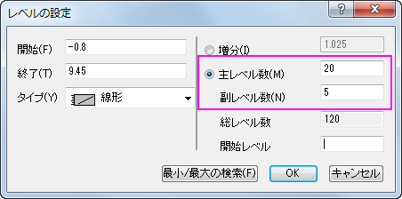
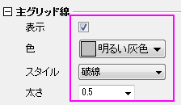

等高線投影付きの3Dカラーマップ三点曲面図
3D-Ternary-Colormap-Surface
サマリー
このチュートリアルでは、XYZZデータからZカラーマップ付きの3D三点曲面図を作成し、その等高線を投影させる方法を学習します。

必要なOriginのバージョン: Origin 2015 SR0以降
学習する項目
このチュートリアルでは、以下の項目について解説します:
- 3D カラーマップ三点（ターナリ）グラフを作成する
- XYZ軸平面上にカラーマップ等高線を投影する
ステップ
3D三点曲面図を作成する
このチュートリアルは、チュートリアルデータプロジェクト<Origin EXE フォルダ>\Samples\TutorialData.opjと関連しています。
- チュートリアルデータプロジェクトを開き、3D Ternary Surfaceフォルダをブラウズします。
- Ternary SurfaceワークシートのBook1Fをアクティブにし、C列とD列を選択します。作図：3D：3Dカラーマップ三点曲面を選択し、作図します。
- 高さ方向の軸と軸平面を表示するために、グラフをダブルクリックして、作図の詳細ダイアログを開きます。左パネルでLayer1を選択します（このときLayer1の左側にあるチェックを外さないように注意してください）。平面タブを開き、角柱を角柱全体に設定し、平面の縁を有効にします。
- Layer1を開き、データプロットを選択して塗りつぶしタブを開きます。有効にするにチェックを付け、カラーマップを選択します。
裏面を塗りつぶすにチェックを付け、色を明るい灰色にします。
- カラーマップ/等高線タブをクリックします。レベルヘッダをクリックしてレベルの設定ダイアログを開き、以下のように設定し、OKをクリックします。
- 
- 曲面上に等高線を追加するには、等高線図を有効にするにチェックを付けます。
- 表示した等高線を編集するには、表の線ヘッダをクリックして等高線ダイアログを開きます。 線の属性
の項目の、色と線種にチェックを付け、色は濃い灰色にし、線種は短い破線に変更し、OKボタンをクリックします。
- メッシュタブを開き、有効にするチェックを外してOKボタンをクリックします。
- X/Y/Z軸のスケールや主目盛を編集するには、軸の内のどれかをダブルクリックして軸ダイアログを開きます。X、Y、Z軸のそれぞれのスケールページをCtrlキーを押しながら選択します。主目盛＞値を0.2に設定します。
- Zh軸ノードを開き、スケールを選択します。スケール範囲と主目盛＞値び設定を下図のようにします。
- OKをクリックして、軸ダイアログボックスを閉じます。
等高線を投影する
- グラフをアクティブにして、メニューからグラフ操作：レイヤ内容を選び、レイヤ内容ダイアログを開きます。ドロップダウンリストからフォルダ中のワークシートを選択します。
- グラフ内に他の三点曲面図を追加するために、Ternary SurfaceシートのXC と CRC299を選択してプロットの追加ボタン
 をクリックします。OKをクリックしてください。
をクリックします。OKをクリックしてください。
- プロットをダブルクリックして、「作図の詳細」ダイアログを開きます。Layer1の下にあるリストから、2つ目のデータプロットを選択し、面タブを開きます。平面とZ方向に移動のチェックボックスにチェックを付けます。
- カラーマップ/等高線タブを開き、等高線図を有効にするにチェックを付けます。線ヘッダをクリックして等高線ダイアログを開き、下図のように設定してOKボタンをクリックします。
- カラーマップ/等高線タブを開き、レベルヘッダをクリックしてレベルの設定ダイアログで、主レベル数を20にし、副レベル数を5に設定します。OKをクリックしてダイアログを閉じます。
- 塗りつぶしタブを開き、有効にするにチェックを付けます。
- メッシュタブを開き、有効にするのチェックをはずします。OKをクリックしてダイアログを閉じます。
- 軸平面のグリッド線を点線に変更するために、軸上でダブルクリックして軸ダイアログを開きます。左パネルで、Xの下のグリッド線を選択します。他を選択ボタンをクリックして、全ての軸のグリッド線を選択します。主グリッド線
の設定は以下のように行います。
- 
- ホットスポットをドラッグしてプロットを回転します（ヒント：グラフフレーム内部で一度クリックし、移動/サイズ変更/回転の関数をアクティブにします）。または、3D回転ツールバーを使用します。